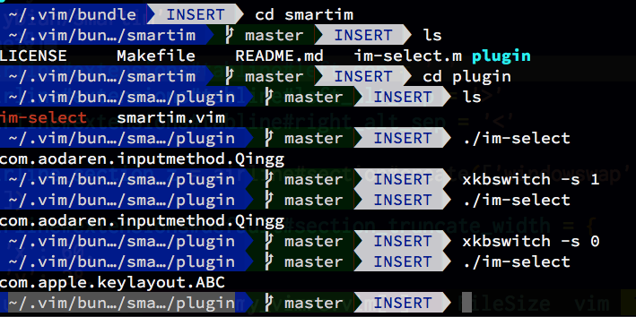

2019-02-12 星期二 18:01 | tags: vim, mac, -- (permalink)
关于mac vim中文输入法的切换
在用vim写中文的时候，总是在vim模式切换的问题上比较头疼。在中文状态下，按《ESC》进入normal模式的时候，中文输入还是打开的，影响vim的操作，要手动切换成英文输入。编辑完成再次进入插入模式的时候，又要打开中文输入，很是不方便。
在网上找了很多帖子，尝试了好几个办法，感觉找到一个比较好用的。 方法如下。
- 在.vimrc配置文件中 ，加入插件管理内容
Bundle 'ybian/smartim'
let g:smartim_default = 'com.apple.keylayout.ABC' "我mac上的英文输入法是这个，如果是其它英语的话是应该是com.apple.keylayout.US,可以用im_select来查看当前输入法的代码。
如果不使用插件管理的话，可以搜索直接下载相关文件。 然后在vim里安装插件，在命令模式下运行BundleInstall安装好插件，重启vim就可以了，效果完美，而且不影响速度。
